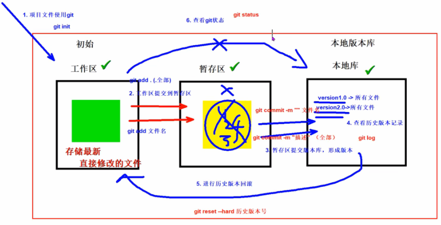
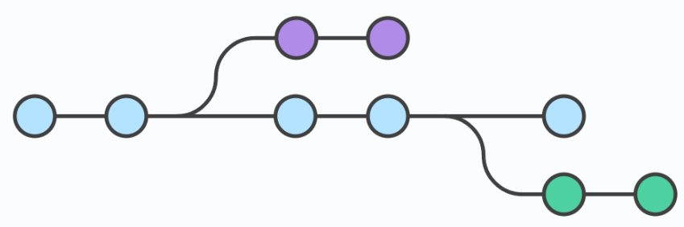
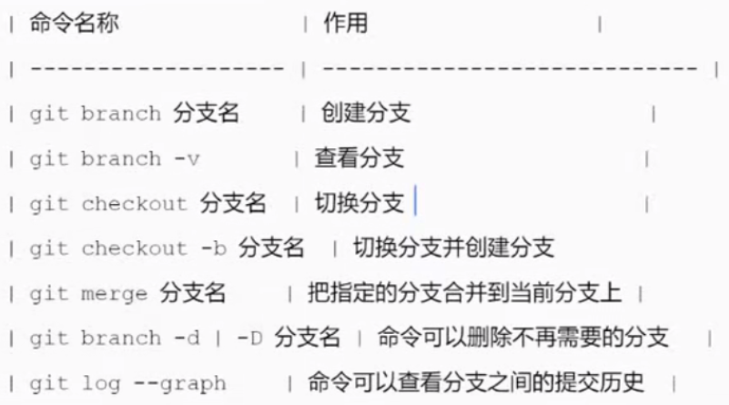

Git
日期：2025年11月3日
1. Git 的概念和作用
Git 是一个分布式版本控制系统，用于跟踪文件的变更历史，支持多人协作开发。
2. git 工作流程
工作区 → 暂存区 → 本地仓库
- 工作区：正在编辑的文件所在目录。
- 暂存区：使用 git add 命令将修改加入暂存区，准备提交。
- 本地仓库：使用 git commit 将暂存区内容提交到本地版本库。

3. git 的常用命令
配置 git 的账户与邮箱
初始化仓库
将工作区的文件加入到暂存区
查看本地仓库信息
版本回滚
4. git 分支
Git 分支管理是 Git 强大功能之一，能够让多个开发人员并行工作，开发新功能、修复 bug 或进行实验，而不会影响主代码库。几乎每一种版本控制系统都以某种形式支持分支，一个分支代表一条独立的开发线。
使用分支意味着你可以从开发主线上分离开来，然后在不影响主线的同时继续工作。


创建分支
切换分支
合并分支: 一旦某分支有了独立内容，你终究会希望将它合并回到你的主分支。 你可以使用以下命令将任何分支合并到当前分支中去：
删除分支
5. git 冲突
当在合并分支时，出现同名文件同行内容不同的话，就会出现合并冲突，而解决方式就是去手动的选择要哪个分支上的内容，然后再去将当前工作区提交到本地仓库即可。
6. git 远程仓库
在远程仓库中，推送和拉去是以分支为单位的
6.1 Ssh配置
使用 SSH 协议连接 Git 远程仓库，可实现免密推送/拉取代码，并提升安全性。流程：每次去访问远程仓库时，git 都会从指定位置带着密钥过去，而这个位置可以自己制定，在.ssh的配置文件下，这样就可以完成：不同远程仓库指定的密钥是不同的。
生成 SSH 密钥对
启动 SSH 代理并添加私钥
然后就可以把公钥放到远程仓库了
6.2 git 远程相关命令
关联和断开远程仓库
推送数据到远程仓库
克隆远程仓库内容
拉去远程仓库内容
6.3 配置推送忽略文件
java日常项目模板：
# Compiled class file
*.class
# Log file
*.log
# BlueJ files
*.ctxt
# Mobile Tools for Java (J2ME)
.mtj.tmp/
# Package Files #
*.jar
*.war
*.nar
*.ear
*.zip
*.tar.gz
*.rar
# virtual machine crash logs, see http://www.java.com/en/download/help/error_hotspot.xml
hs_err_pid*
# IDE and Build Files
.classpath
.project
.settings
target
.idea
*.iml
全局配置：首先，在任意位置写一个xxx.ignore，然后，在git的配置文件中应用该文件即可
7. git 提交规范
Commit Message 格式
Type 类型
| 类型 | 说明 |
|---|---|
feat |
新功能 |
fix |
修复 bug |
docs |
文档变更 |
style |
代码格式（不影响逻辑） |
refactor |
重构（既非新功能也非 bug 修复） |
perf |
性能优化 |
test |
增加测试 |
chore |
构建过程或辅助工具变动 |
revert |
回滚提交 |
build |
构建系统或外部依赖变更 |
ci |
CI 配置文件和脚本变更 |
Scope（可选）
表示影响范围，如：config、file、log 等
示例
# 新功能
feat(file): add PDF file loading support
# bug 修复
fix(prompt-loader): fix encoding error when loading txt files
# 文档
docs: update README with installation instructions
# 重构
refactor(config): simplify config loading logic
# 简单提交（无 scope）
fix: correct file extension check
最佳实践
- 使用祈使句 - "add feature" 而非 "added feature"
- 首字母小写 - "fix bug" 而非 "Fix bug"
- 首行不超过 50 字符
- Body 解释 what 和 why，而非 how
- 一个提交只做一件事